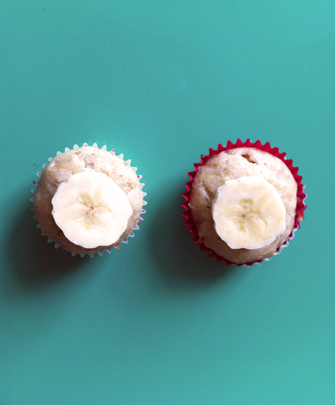

        <div class="pageloader_inner wrapper clearfix">
        <div id="entry-single">
            
            <aside id="sidebar" class="right_float">
            	<section class="sidebar_section">
                	<div class="entry-headline">
                        <div class="entry-title"><h4>Muffins à la banane</h4></div>
                        <div class="entry-date">Recettes</div>
                    </div>
                    
                    <div class="entry-info">
                        <p>Ingrédients pour 10 muffins
                      </p>
                      <p>2 bananes mûres, 100 gr de sucre, 70 gr de beurre, 2 cuillères à café de levure chimique 1/2 cuillère à café de sel et 200 gr de farine.
                      </p>
                      <p>Préparation
                      </p>
                      <p>Ecrasez les bananes et mélangez les avec le sucre, l'oeuf et le beurre préalablement ramoli,
Tamisez la farine avec la levure et incorporez le sel. Ajoutez au mélange de banane.
Remplissez vos moules à muffin jusqu'au 3/4 et enfournez à 180 c pendant 20 minutes.
                      </p>
                        
                  </div>
                
                </section>
            </aside>
            
            <article id="maincontent" class="left_float">
              	
            	
			</article> <!-- END #maincontent -->
    	</div>        
	</div>
